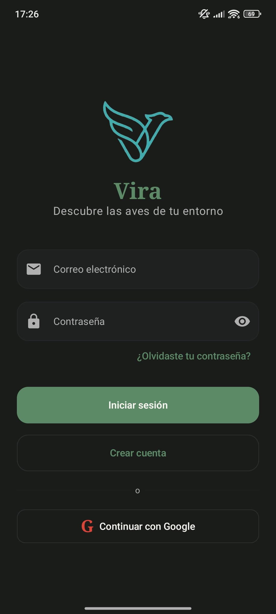
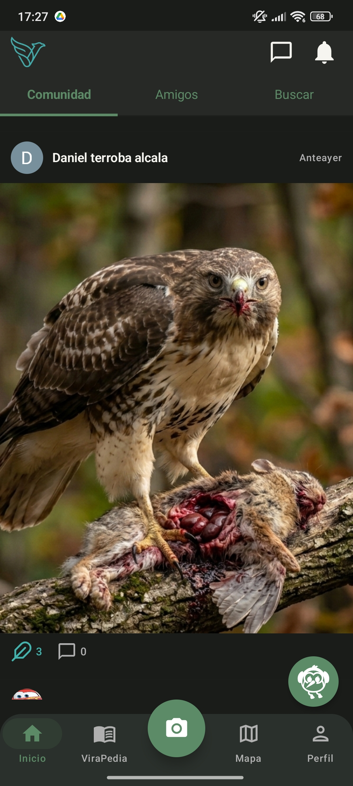
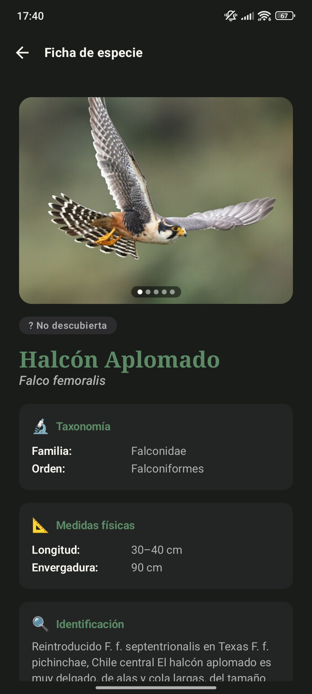
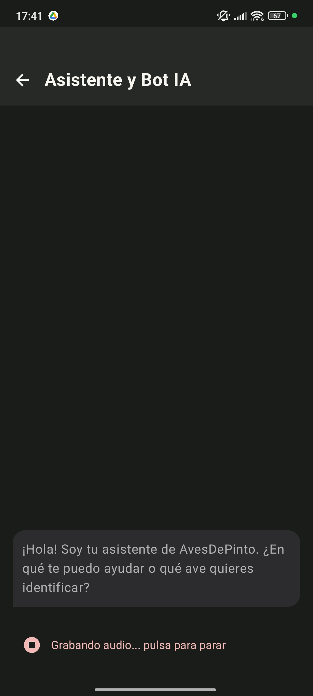
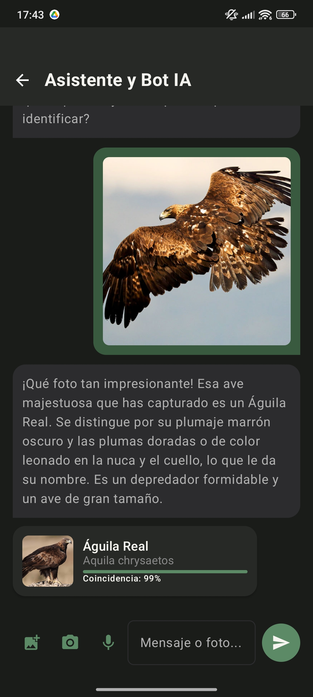
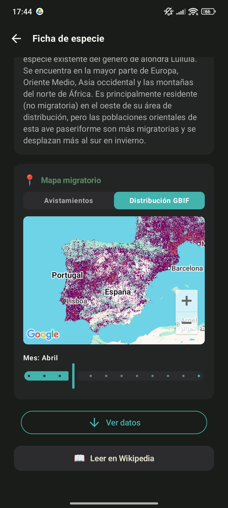

Bienvenido a ViraPedia (Aves de Pinto).
ViraPedia no es solo una guía de campo; es un poderoso centro ornitológico de Inteligencia Artificial que te acompaña en tus salidas. Con tecnología de vanguardia y una base de datos multilingüe respaldada por las autoridades taxonómicas mundiales, llevarás a un experto en tu bolsillo.
Base de Datos Exhaustiva
Cuenta con más de 370 perfiles de fauna ibérica nutridos por iNaturalist y Xeno-Canto. Conocerás sus costumbres, envergaduras y dietas actualizadas en 5 idiomas (ES, EN, FR, DE, ZH).
Red Segura
Comparte qué especie estás viendo y dónde (siempre respetando la conservación) a través de nuestra red ciudadana moderada en tiempo real.
Primeros Pasos (Getting Started)
Empezar tu vuelo es cuestión de segundos. El sistema de Autenticación Centralizada Firebase asegura un arranque seguro sin retener datos innecesarios.
1. Acceso a la Plataforma
Toca el botón de "Iniciar Sesión usando Google" (Sign in with Google). Te saltarás el pesado registro de correos manuales, ya que el sistema OAuth valida tu identidad cifrada internamente al instante. ¡Tus avistamientos se guardarán en la nube bajo tu perfil de inmediato!

2. Navegación Inferior Principal
En el pie de pantalla te acompañará siempre un menú con tres apartados core: El Diccionario (búsqueda de aves), Identificación y Chat (el núcleo de Inteligencia Artificial central) y Mapa y Red Social (la comunidad).

Casos de Uso: La Enciclopedia Viva
La sección del Diccionario (ViraPedia) es una fuente científica con miles de datos organizados, sin tiempos de carga gracias a nuestras descargas locales eficientes.
- Listado de Búsqueda Flexible: En la vista principal del directorio de especies puedes buscar cualquier ave, y no solo por su nombre técnico; prueba a buscar familia, rareza o tipo de migración (estival o residente).
- Ficha de la Especie Analítica: Al tocar un ave, ingresarás a su tarjeta
enriquecida. En base al idioma natural de tu teléfono (si eres turista francés se leerá en francés
directamente), consultarás los parámetros medidos en centímetros, su peso, dimorfismo sexual y su
dieta típica documentada extraída de bases biológicas.

- Archivos de Audio Nativos: Podrás reproducir con un Toque cantos limpios (cánticos y reclamos en España), procedentes de Xeno-Canto.
Casos de Uso: Reconocimiento Canto Inteligente
A menudo el ave permanece oculta en el denso bosque. Para esto desarrollamos una de las herramientas más importantes del observatorio.
Sistema Analítico Offline (TFLite)
Navega al botón central y abre el modo "Escucha". Pulsa Grabar durante tres (3) segundos completos. Nuestro modelo matemático de IA interno (BirdNET de 25MB) procesará la onda de 16-bit PCM de tu micrófono sin enviar absolutamente nada a Internet. Te devolverá qué pájaro acaba de cantar al instante. Esto te garantiza 100% de uso en altamontaña o llanuras donde careces totalmente de 3G/4G.

Casos de Uso: Chat Asistente y Fotografía
¿Has logrado fotografiar un ave pero no sabes cuál es? Entra a la sección central tocando el icono de la cámara para consultar a nuestro experto IA integrado.
- Identificación Fotográfica Precisa: Adjunta una foto desde tu galería o toma una
nueva. El Asistente IA de ViraPedia analizará las características del plumaje, el pico y la forma
para decirte de qué ave se trata.

- Resultados Estructurados y Conectados: ViraPedia ya no solo te da una parrafada de texto. El sistema extrae inteligentemente la información del pájaro identificado y te presenta una tarjeta de coincidencia interactiva. Con un solo toque en "Saber más", saltarás directamente a su ficha técnica completa en el diccionario o a su Wikipedia.
Mapas Avanzados y Vuelo Social
La aplicación provee el ecosistema ideal para avistadores que viajen juntos en una zona.
🗺️ Mapas Mensuales de Migración (Capa GBIF)
Dentro de la Ficha del ave, encontrarás la Pestaña de Navegación "Distribución". Un renderizado mensual de teselas geográficas mundiales. Utiliza el Control Deslizante Analógico de Meses en la parte inferior de la pantalla para ver de colores vívidos por qué continentes exactos atraviesa el ave en invierno frente a verano. (Requiere conexión).

👥 Tablero de Muro (Feed) Moderado y Navegador Activo
Nuestra sección Mapa general y Feed en tiempo real agrupa los logs tomados en las últimas cinco. Pero hay condiciones:
- No se admiten fotos "Basura": Cada post es analizado asíncronamente en backend por otra IA, y mediante filtros de severidad (HarmCategory) si subes un Perro, comida selfie o insulto, la red de subida será cancelada salvaguardando a la comunidad ornitológica de spam molesto.
- Google Vengo hacia Ti (Navigation Intents): ¿Es un ejemplar muy raro el reportado al lado tuya? En su post, presiona el botón "Ir Hacia Allí" y ViraPedia re-lanzará a tu Aplicación Google Maps externa con una ruta generada de Turn-By-Turn Navigation de coche/pie. ¡Sin pérdidas!
- Interacción Social (Pluma de Me Gusta): Reconoce el mérito de otros observadores tocando el icono de la Pluma en sus publicaciones. Nuestro sistema registra tu validación en tiempo real.
🔒 Chat Privado Cifrado (E2EE)
¿Has conocido a un compañero de avistamiento en el muro y quieres planear una salida? ViraPedia incluye un sistema de mensajería privada de vanguardia.
- Cifrado de Extremo a Extremo: Tus mensajes viajan blindados. Nadie, ni siquiera los administradores de la aplicación, pueden leer el contenido de tu chat.
- Conversaciones Directas: Inicia un chat tocando el perfil de un usuario en el Feed. Solo podréis acceder a este canal privado vosotros dos.
Solución de Problemas (Preguntas Frecuentes)
Aquí tienes soluciones rápidas a los inconvenientes más comunes durante tus rutas.
La grabadora se cierra sola
Si al tocar el botón de "Escuchar Canto" la app vuelve a la pantalla anterior, significa que no has concedido permisos de micrófono. Ve a Ajustes de tu Móvil > Aplicaciones > ViraPedia > Permisos y Activa "Micrófono".
La IA no adivina el pájaro
La precisión de ViraPedia depende de los datos que le des. Si en la grabación de audio hay mucho viento o gente hablando, o si la fotografía sale borrosa o a contraluz, el asistente te dará un resultado genérico (ej: "Passeriforme"). ¡Intenta aislar el sonido o tomar otra foto!
Mi publicación no aparece en el mapa
Nuestra comunidad mantiene el enfoque ornitológico. Si nuestra Inteligencia Artificial detecta que tu foto contiene rostros, mascotas u objetos que no son aves, la publicación no se subirá. Asegúrate de enfocar bien a la especie.
Configuración y Privacidad de tu Cuenta
En ViraPedia nos tomamos muy en serio que tus salidas al campo sean tuyas. Tu cuaderno de campo digital está protegido por tecnología en la nube de nivel corporativo.
- Privacidad de Avistamientos: Por defecto, lo que registras en tu perfil es privado. Nadie sabrá dónde estás ni qué has visto a menos que decidas compartirlo activamente en el Feed Social de la Comunidad.
- Tus Datos Son Tuyos: No vendemos tu información. Además, si decides dejar de usar la aplicación, puedes acceder a los ajustes de tu perfil para eliminar tu cuenta y todos tus registros en un solo click, borrándose definitivamente de todos nuestros servidores.
- Funcionamiento Offline Constante: Hemos diseñado la aplicación para que descargue las guías esenciales a tu teléfono. Si te quedas sin cobertura en plena montaña, la enciclopedia y el motor de reconocimiento de cantos seguirán funcionando perfectamente.